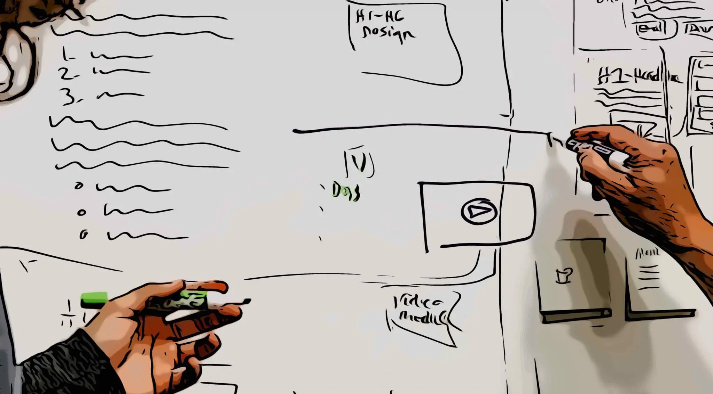

The Complete Guide to Maximum Security Online
Learn how you can stay anonymous to protect your privacy while browsing the net.


Learn how you can stay anonymous to protect your privacy while browsing the net.
Lookalike modeling is the process of identifying new customers that look and behave like your current audience. It involves taking a seed audience and defining key characteristics which differentiate these. It must be a good challenge for students in business major to get their marketing skills maxmized for the future job.
What you need to know before start a lookalike design:
Choosing datasets:
First party, second party, third party, online, offline CRM, purchase, location – data comes in many different forms and comes from many different places.
You need to pull these datasets into a single place to maximize the effectiveness of your lookalike audiences.
Define attributes:
Next up you’ll need to identify the attributes or behaviors that identify your most valuable customers.
This will look different depending on the type of data sets you’re using. You can combine attributes from different datasets to create more specific seed audiences.
The more specific your look-alike model, the more likely you will find your target audiences. The stricter your seed audience, the more likely it will help you to realize your goals.
The primary use for lookalike modeling is to find new prospects for your business. Building lookalike audiences allow marketers to scale their campaigns to relevant consumers. With the instant reach available to marketers via digital targeting platforms, lookalike modeling can instantly help a business scale their key metrics and improve their bottom line. Lookalike targeting can also help to extend the reach of specific campaigns. All campaigns eventually run dry, no matter how effective they are. Using lookalike audiences, these high performing campaigns can be extended to reach new audiences that will hopefully have a similar level of conversion. Audience modeling is part of every successful media buying strategy. All media buyers should be aware of how lookalikes work in order to make informed decisions concerning their ad campaigns.